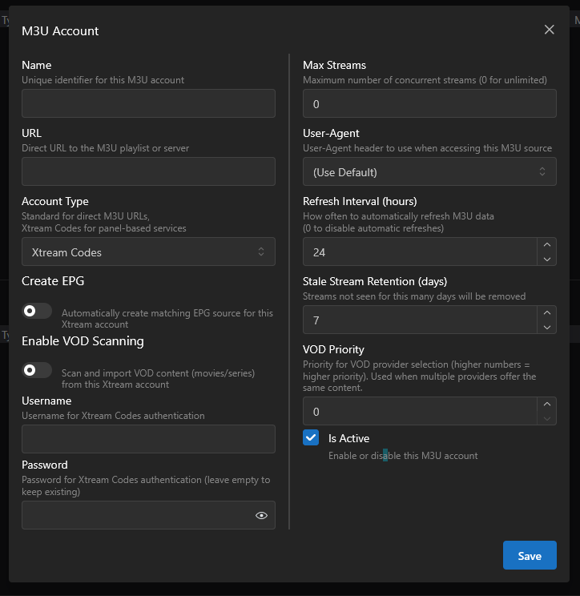
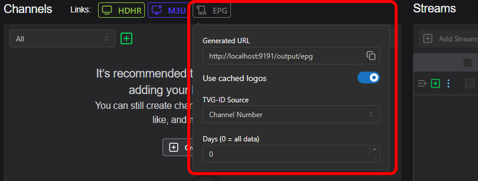

Guía de Inicio¶
Dispatcharr puede instalarse en varias plataformas a través del uso de Docker, incluyendo Windows, macOS, Proxmox y Unraid. Esta guía proporciona instrucciones detalladas para cada método.
Instalación¶
Mira guia de instalación.
Inicio¶
Después de la instalación y ejecución, abre tu navegador web y visita: http://{your_ip_here}:9191
Crea tu cuenta de usuario ingresando un nombre de usuario y una contraseña que puedas recordar. Opcionalmente, puedes añadir una dirección de correo electrónico.
Nota
Las direcciones de correo electrónico actualmente no se utilizan, pero podrían implementarse en versiones futuras.
Agregando M3U y EPG¶
- Agrega tu primera lista M3U haciendo clic en el botón
Add M3Uubicado en el lado derecho, en la sección "Getting Started". - Esto te llevará a la sección de administración "M3U & EPG Manager" (también accesible desde la barra de navegación en el lado izquierdo).
Captura de pantalla
- Haz clic en
Adddentro de M3U Accounts para añadir una lista M3U - Haz clic en
Add EPGdentro de EPGs para añadir la guía EPG
Captura de pantalla
- Ingresa un nombre para tu cuenta M3U.
- Elige el tipo de cuenta (Xtream Codes o Standard M3U) e ingresa la URL (Si estás usando Xtream Codes, ingresa también el nombre de usuario y la contraseña asociados).
- Opcionalmente, puedes establecer un número máximo de transmisiones (streams) simultáneas permitidas, o dejarlo en 0 para que sea ilimitado.
- Clic
Save.
Captura de pantalla

- Haz clic en el ícono de edición correspondiente a la cuenta M3U que acabas de agregar.
- Haz clic en el botón
Groupsy selecciona los grupos que deseas agregar, luego haz click enSave and Refresh
- Haz clic en el botón
- Dependiendo del tamaño de tu lista M3U, el proceso de carga puede tomar algo de tiempo.
- Haz clic en el botón
Add EPGen la sección EPGs para agregar una guía de programación. - Ingresa un nombre para tu EPG, luego ingresa la URL y, si es necesario, la clave API.
- Elige el tipo de fuente y haz clic en "Submit".
- Dependiendo del tamaño de tu EPG, la carga puede tardar un poco.
Captura de pantalla
Creando tu primer canal (channel)¶
- Ve a la pantalla principal de Channels en la barra de navegación.
- Si se agregó y escaneó correctamente alguna lista M3U, deberías ver una lista de transmisiones (streams) en el lado derecho de la página, bajo "Streams"..
- Busca una transmisión (stream) en la lista, o utiliza el buscador escribiendo en el encabezado de la columna "Name".
- Haz clic en el botón "Create New Channel" para agregar la transmisión (stream) a un canal nuevo.
Captura de pantalla
- Si deseas añadir una transmisión (stream) de respaldo desde otro proveedor, busca la transmisión (stream) correspondiente en la lista de streams y haz click en el botón "Add to Channel" debajo de la columna "Actions".
Configuración de Reproducción¶
Jellyfin¶
Agregar proveedor de TV¶
- Jellyfin acepta formato HDHR o M3U.
- En Dispatcharr, navega a la página "Channels" y haz clic en los botones HDHR o M3U en la parte superior de la página. Luego, copia la URL que se muestra.
Captura de pantalla
Captura de pantalla
- Navega a tu instancia de Jellyfin y haz clic en el ícono del Panel de Administración (Admin Panel Icon) para gestionar tu servidor Jellyfin.
- Haz clic en "Live TV" dentro de la sección Live TV, luego presiona el botón ‘+’ junto a "Tuner Devices".
Captura de pantalla
- En "Tuner Type", selecciona HDHomeRun si estás usando la URL HDHR, o M3U Tuner si estás usando la URL M3U de Dispatcharr.
- Agrega la URL y guarda los cambios.
Nota
Si lo agregas como M3U, deja el límite de transmisiones simultáneas en "0", ya que los límites de reproducción serán manejados por Dispatcharr..
Agregar lista de programación¶
- Para agregar datos de guía de programación desde Dispatcharr, navega a la página "Channels" en Dispatcharr, luego haz clic en el botón EPG en la parte superior de la página y copia la URL proporcionada.
Captura de pantalla

- En la página de configuración de Live TV en Jellyfin, haz clic en el botón ‘+’ junto a "TV Guide Data Providers".
Captura de pantalla
- Elige XMLTV y agrega la URL.
- Los datos de la EPG se asignarán automáticamente.
Plex¶
- Plex acepta el formato HDHR y generalmente puede detectar unidades HDHR automáticamente.
- En Dispatcharr, navega a la página "Channels", luego haz clic en el botón HDHR en la parte superior de la página y copia la URL generada.
Captura de pantalla
- Navega a tu instancia de Plex y haz clic en el ícono de Settings para administrar tu servidor Plex.
- Desplázate hacia abajo hasta
Managey haz clic enLive TV & DVR, luego seleccionaSet Up Plex Tuner. - Plex debería detectar automáticamente tu instancia de Dispatcharr, pero si no lo hace, haz clic en
Don't see your HDHomeRun device? Enter its network address manuallyingresa la URL HDHR que copiaste desde Dispatcharr y presionaConnect.
Captura de pantalla
- Plex proporcionará su propia EPG si admite tu país y código postal. Si Plex no proporciona la EPG para tu región o si prefieres usar la tuya, puedes agregar la EPG desde Dispatcharr..
Advertencia
Si Plex no tiene EPG disponible para tu zona, deberás proporcionar tu propia guía antes de continuar.
Captura de pantalla
- Ahora podrás asignar la EPG a los canales en caso de que alguno no se haya mapeado automáticamente..
Captura de pantalla
- Haz clic en
Continuey Plex cargará los canales y la programación de la EPG
Falta de logos?
Agrega ?cachedlogos=false al final de tu URL de EPG para evitar el almacenamiento en caché de logos, el cual Plex no soporta actualmente.
ChannelsDVR¶
- En Dispatcharr, navega a la página "Channels", luego haz clic en el botón M3U en la parte superior de la página y copia la URL generada.
Captura de pantalla
- Navega a la página de tu servidor ChannelsDVR, ve a "Settings" y selecciona "Sources".
Captura de pantalla
- En la sección Live TV, haz clic en el botón verde "Add Source".
Captura de pantalla
- En la ventana emergente, elige Custom Channels.
Captura de pantalla
- En el menú Custom Channels, utiliza las siguientes opciones:
- Nickname: Agrega un nombre para tu lista M3U.
- Stream Format: MPEG-TS.
- Source: Selecciona "Use URL" y pega el enlace M3U desde Dispatcharr.
- Opciones:
- Refresh URL daily - (Actualizar URL diariamente)
- Prefer channel-number from M3U - (Preferir número de canal desde M3U)
- Prefer channel logos from M3U - (Si deseas usar los logos gestionados en Dispatcharr)
- No Stream Limit - (Dispatcharr gestiona los límites de transmisión)
- XMLTV Guide Data:
- Si configuraste Gracenote ID para cada uno de los canales y deseas que ChannelsDVR genere una guía completa de 14 días utilizando sus datos, no agregues una guía y haz clic en Save (Guardar).
- Si deseas usar la EPG desde Dispatcharr, agrega el enlace EPG de Dispatcharr, selecciona la frecuencia de actualización y haz clic en Save (Guardar).
Captura de pantalla
Emby¶
Agregar proveedor de TV¶
- Emby puede aceptar formato HDHR o M3U.
- En Dispatcharr, navega a la página "Channels", luego haz clic en las opciones HDHR o M3U en la parte superior de la página y copia la URL generada.
Captura de pantalla
Captura de pantalla
- Navega a tu instancia de Emby y haz clic en el ícono de Settings para administrar tu servidor Emby.
- Haz clic en "Live TV", luego en "Add TV source".
- Selecciona HDHomeRun si estás usando la URL HDHR, o M3U si estás usando la URL M3U desde Dispatcharr.
- Agrega la URL y guarda los cambios.
Nota
Si lo agregas como M3U, deja el límite de transmisiones (streams) simultáneas en "0", ya que los límites serán manejados por Dispatcharr.
Agregar lista de programación¶
- Puedes usar la guía de programación proporcionada por Emby, la guía de programación de Dispatcharr, o una combinación de ambos.
- Para usar la guía de programación proporcionada por Emby, haz clic en "Add Guide Data Source", elige tu país, luego selecciona "Emby Guide Data" y presiona Next.
- Sigue las indicaciones para encontrar los datos de canales que necesites. Puedes agregar múltiples fuentes de guía de Emby si es necesario.
- Emby intentará asignar automáticamente los canales a la guía de programación pero es posible que tengas que hacer el mapeo manualmente. Puedes hacerlo en "Live TV" > Channels, o en el administrador de metadatos de Emby.
- Para agregar la guía de programación desde Dispatcharr, navega a la página "Channels" en Dispatcharr, haz clic en el botón EPG y copia la URL generada.
- En la página de configuración de Live TV en Emby, haz clic en "Add Guide Data Source", elige tu país, luego elige "XMLTV" como fuente de guía y presiona Next.
- Los datos de la EPG se asignarán automáticamente.